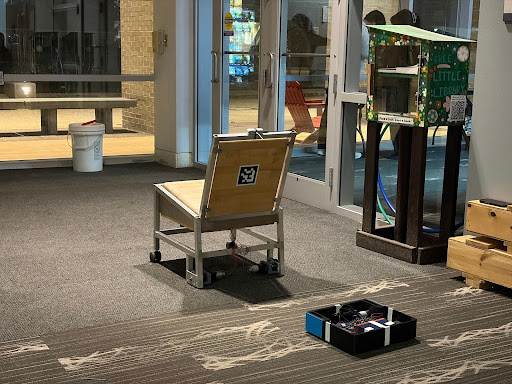
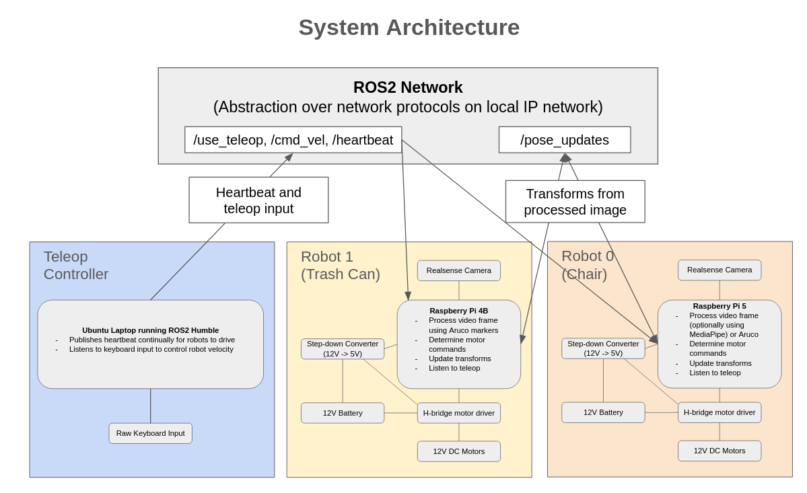
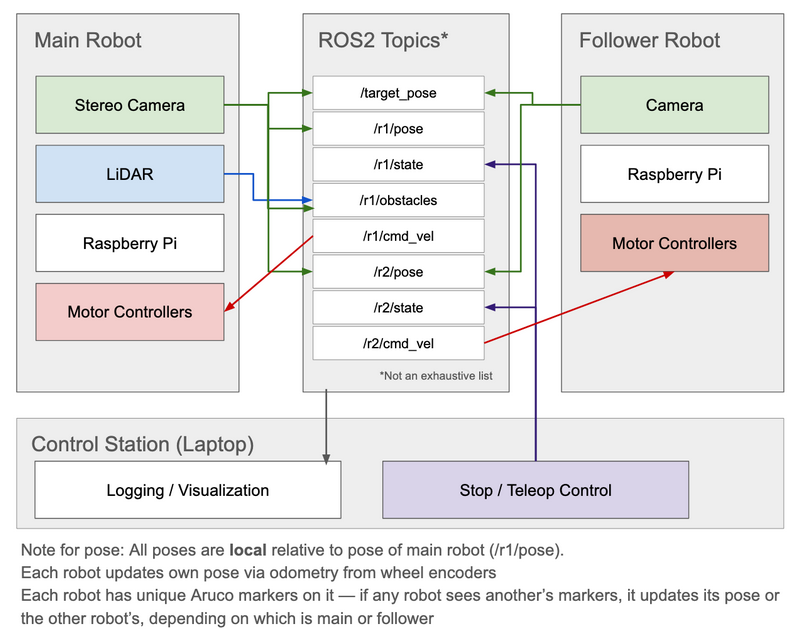
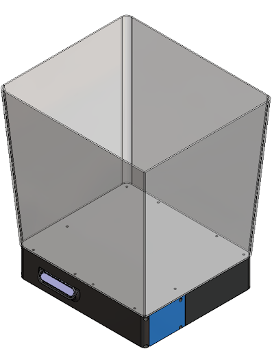
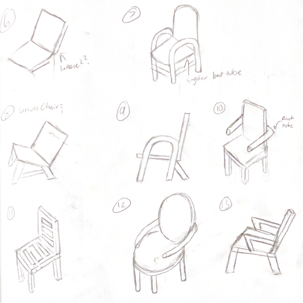
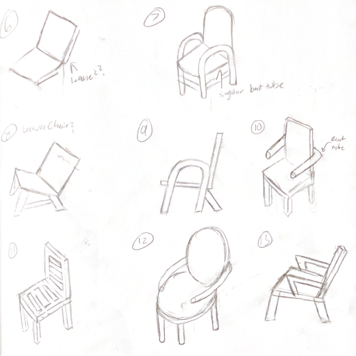
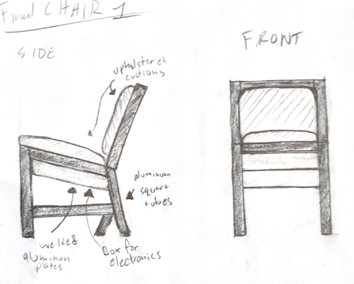
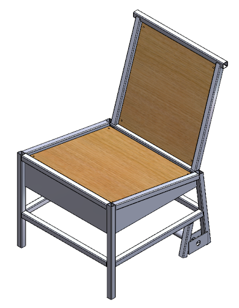
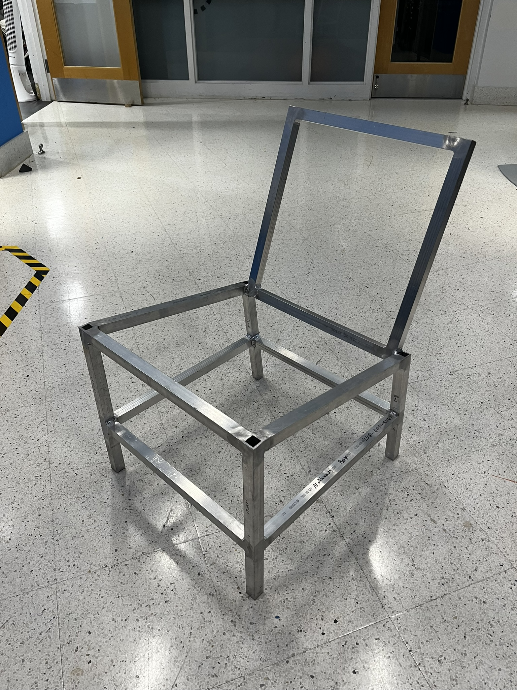

Desk On Demand
Overview
By Ben Ricket, Nathaniel Banse, Alyssa Aranda, Lukas Littlejohn, and Julian Shah
We have built an autonomous robotic chair and trashcan, both of which are eager to follow people (or each other) and patiently wait behind them. This design solves the age-old problem of people being too lazy to walk to a chair, wishing one were immediately behind them instead. This target group of people too lazy to walk to a chair provides another probelm we have to address: Litter. Given the strong correlation between people too lazy to walk to a chair, and people too lazy to throw away their trash, we had to provided a convenient receptacle for trash that would also follow the target individual.
On a technical level, our project consists of two robots, a chair and a trash can. Both of these robots have the same control scheme (differential drive with two bi-directional driven wheels and casters on the back). Additionally, both of these robots have a Raspberry Pi onboard to control them as well as an Intel Realsense depth camera for observing the environment. To detect and follow people, we implement two methods --- Aruco marker detection via OpenCV, which is computationally cheaper than trying to detect a human, as well as human detection via MediaPipe. Both of these methods return the coordinates in 3D space of the target relative to the robot, and the robot can drive accordingly. Additionally, the robots are able to communicate --- while this is not necessarily essential for simple following behavior, the robots are able to communicate the positions of targets they see to each other, potentially opening the door to more complicated coordination schemes in the future.
We help control ther robots via a script that runs locally on our computer, providing a heartbeat to ensure the robots only drive when we have the capacity to stop them. At any moment, we can choose to override their movement and supply our own velocity commands to either robot. The robotic chair is also a fully functional chair, capable of supporting the full weight of a person sitting on the chair while being reasonably comfortable and ergonomic.

System diagram

Goals
In our design process, we initially outlined a set of design goals, designed chiefly around the mechanical, electrical, and software components of the project.
Our initial goals, from the first review, were as follows:
Mechanical:
- Weld an aluminum frame for a chair.
- Upholster chair for comfort and fit wide range of people.
- Durable drivetrain that can withstand the weight of a range of different people sitting.
- Make drivetrain back drivable.
Electrical:
- Easily replaceable/serviceable components
- No/Minimal visible wires
- Integrated e-stops
- Robot movements can be overridden by a human pushing it
Software:
- Localization relative to the followed person
- Communication of sensor data between two robots
- Image processing to identify targets to follow
- Teleop control modes and software overrides
We also outlined a preliminary software architecture sketch for our project, appearing as follows:

By the end of the second review, we had not added or removed goals from our intial list, and had made progress towards our initial goals.
We never had to entirely re-scope our goals or change any drastically, and are currently at the following stage:
Mechanical:
- The aluminum frame is welded, supports weight, and works very well.
- The chair has not been upholstered --- however, we did study which chairs had more pleasant/ergonomic designs, and designed the chair to have a pleasant recline and soft surfaces made of wood, which are (surprisingly) quite comfortable to sit in.
- The drivetrain withstands all weight we've put on it --- it does not drive well with the weight of a person, but this was not within the design goal --- the robot simply needs to approach a person and let them sit stationarily.
- The drivetrain is back drivable, and the chair can be pushed in any way when not spinning the motors.
Electrical:
- The components are easily replaceable, with the electronic box of the chair swappable after removing four screws. The batteries are interchangeable as well.
- Most wires are contained in the body of the chair and trash can, out of view, with connectors attaching sets of wires to the right pins. Future progress on this front would involve soldering the wires to the motor leads and routing the motor control wires through the aluminum frame.
- The e-stop is mechanically integrated with the frame, yet is not currently wired up. In the future, we would want to spec a relay for the e-stop to control, in order to not risk running more than the rated 10A current through it.
- The robot movement can be overridden by a human pushing it.
Software:
- The robots successfully localize themselves relative to a followed person and drive to approach the person, both with Aruco markers or with human detection via MediaPipe.
- The two robots communicate their camera data between each other via the shared
/pose_updatestopic. - We successfully implemented image processing identifying Aruco markers and humans via OpenCV and MediaPipe.
- The robots can be independently controlled via keyboard input on a teleop controller script, stop upon a heartbeat from that script dropping out, and can be stopped almost immediately upon pressing SPACE.
Decisions + Tradeoffs
Over the course of the project, we have laid out reasoning behind the design decisions we came to making over the course of the project.
Having multiple robots
While this theoretically adds extra cost and requires us deal with communication between robots, implementing this inter-robot communication was among our learning goals for the project, and we were able to find most of the expensive components for free. Additionally, the simpler trash can design allowed for us to test our initial code as soon as possible, given that the metal chair frame was only drivable late in the project. Were we not able to test code on the trash can, integration would have been even more difficult.
Using ROS2
The downsides of using ROS2 are the fact that it is a fairly heavy middleware to use, is nontrivial to set up right, and is picky about Ubuntu versions. However, these cons were mitigated by the following:
ROS2 makes interprocess and inter-robot communication much easier than networking manually.
ROS2 is something both of us on software (Ben and Julian) are familiar with using.
ROS2 provides a very convenient library for handling frame transforms, tf2.
ROS2 Humble provides a Docker image that lets us use the same environment on our different Raspberry Pis.
For these reasons, we decided to go with ROS2.
Not integrating encoders
In the final chair, encoders are not currently present. While we purchased encoders and spent multiple hours configuring them, reading the data sheet, and trying to interface with them, the difficulty they offered was not worth the time commitment near the close of this project. In particular, we ran into the following issues:
- Our encoders have the same I2C address without a multiplexer, so we would need to purchase an I2C multiplexer in order to read encoder data using I2C. The alternative is using PWM.
- RPi 5 does not supprot kernel level interrutps via the PiGPIO library, which makes reading PWM signals less accurate.
- Configuring the encoders to output PWM is difficult, requiring one resister be desoldered from the board, a script flashed to the Arduino to configure it, and a script carefully used to burn this configuration to write-once memory that cannot be changed in order for the configuration to persist.
- With the non-burned encoder, we were still encountering difficulty consistently reading from the encoders.
- We had not yet designed a mount for the encoders on the chair, only for the trash can.
Not integrating LiDAR
In the final chair, the LiDAR sensor is mounted, but is not run. While interfacing with the LiDAR is not difficult --- we did this by the second review date, visualizing the LiDAR scan from the sensor --- we did not end up with software logic that accounted for obstacles. We have no obstacle avoidance built into the chair and trash can, so the LiDAR data did not provide any useful input given the state of our code.
Overall
Overall, we're content with the progress we've made so far on the chair. While there are avenues to explore with respect to integrating the sensors we weren't able to integrate and adding support for more insteresting and complicated control modes, we are proud of having made two functional robots, one of which doubles as a chair, which are able to follow an Aruco marker or human fairly well.
Links to videos in case display doesn't work: Video 1 Video 2
Mechanical
Trashbot V1:
In the intrest of giving our lovely code demons as much time to test on physical hardware as possible, we began the mechanical journey with a super simple bot:

As you can see, this bot has little thought put into wire management, or electronics plaement. All we needed from this was a testbed with the same fundamental architecture as the final trashbot, and the chair. As you can see, this bot was so small that the battery didn't even fit inside! Instead, it was put on top. This both decreased print times, and made swaping fuses easier, but was a big compromise for industrial design. On top of all of this, there was no place to mount a trashcan, making it a pretty trash trashbot. Despite all of this, it performed it's one purpose perfectly:
Letting the code team get used to new hardware, and prove the basic mechanical architecture we would use for the rest of the project.
This also gave us a larger window of time to work on the chair and trashbot V2 without the code or electrical team breathing down our necks! Here is an image of Trashbot V1's final CAD:

Trashbot V2:
Trashbot V2 was a complete do-over compared ot trashbot V1. We had tons of feadback from the electrical and code teams to implement. The bigest change was an increase in footprint. This let us finaly put the batery and power distrobution board inside the robot, as well as fit some new H-bridge motor controllers. It also allowed us to mount the Intel Realsense depth camera in the frame. This ensured it was better protected and removing unsightly exposed cables. Last but certainly not least, the increased footprint allowed Trashbot V2 to actually carry a trashcan!
While the increase in size of Trashbot V2 seems exclusively like an upgrade, it makes one thing much harder:
Manufacturing:
We still wanted to use a 3D printed frame for Trashbot V2, but because of the increase in footprint, the frame no longer fit on a prusa printer. To remedy this, we split the frame into 4 pieces. This creates a new problem though: How do you re-connect the pieces?
For this, we designed a plate that could be laser cut which we could then screw each piece into. Then, in combination with a laser cut lid, we would have a strong chassis. Here is what that final CAD looked like:

As nice as this concept seems, the clock had other ideas. In the intrest of moving onto fabricating the chair, we were forced to use a different method to join the chassis pieces. Inspired by RC glider wing designs, we made use of the very large flat surface area of the bot frame to create a strong tape joint. Now, I know how that sounds, but you'd be suprised with how strong this tape joint actualy is!

As you can see, with the new chassis, we have much more room for wire management and electronics placement. You may also notice that the wheels are enclosed now. This ensured that the Trashbot maintains the high level of industrial design that is expected from trashcans. They are also a fair bit smaller, which helps to slow down the robot and allowed more precise control.
Chair Design:
The chair design process started in parallel with Trashbot V2. This helped ensure that both projects were able to move along as quick as possible. To start out with, we created a bunch of different sketches for chair ideas:
 

Then, as a team, we decided on one design to move forwards with based on industrial design, manufacturability, and ease of assembly. Then we made some more detailed sketches of that design from a couple different angles:

With this design concept finalized, we moved onto CAD. The CAD for the chair requires the use of some fun tools:
3D sketches, and weldments!
3D sketching is fundamentaly the same as its 2D counterpats, but with double the degrees of freedom. We do need this added complexity though, as we need to be able to model each tube of the chair in 3D space. All we need to do to go from a 3D sketch to a final model is the Solidworks Weldments tool! This beautiful tool lets you use pre-defined "weldment profiles" to turn any sketch line into a fully modeled tube. Once we have the initial tubes made in CAD, we can make use of the trim extend tool to make the tubes not clip together.
After all this, we end up with a final CAD model that looks like this:

And with that, we can move onto fabrication!
Chair Fabrication:
The fabrication process for the chair began with making the frame:
First we made a cut list:

We don't need anything fancy with this, as long as all the critical dimensions are clearly called out. With this, we were able to use a horizontal band saw to cut all the pieces of tubing we would need for the chair. This whole process took around 6 hours, and was completed over the course of 2 days.
Once we had all the tubes cut to length, the next step was prepping them for welding:
TIG welding is very sensitive to contamination, so our first step of weld prepping involves removing anythign that could cause contamination. To start off, we cleaned all of the coolant from the band saw off the tubes. This not only entails cleaning the outside of the tubes, but the inside too. Since welding should melt all the way through the base metal for propper penetration, any contamination on the back side of the weld will get drawn into the weld pool. Luckily for us, the coolant we use for the band saw is water based, and as such, washes off very easily. After rinsing the coolant off, we used the belt sander to add a bevel to the ends off all the tubes. This will promote better weld penetration, thus giving stronger welds. Also, since we need to grind down some of the welds for the sake of industrial design, or fitup, the bevel prevents surface level welds that will completely dissapear when ground flush. Then we rinse the tubes again, this time ensuring that any aluminum dust or abrasive grit in or around the tube gets washed off. The last cleaning that we need to do in a sink is degreasing. This removes any oils our hands may have deposited on the surface.
Now our aluminum is ready to weld right?
Nope! we still have to do a final wipe down with acetone, followed by the most cruicial step: pre-heating. Since aluminum conducts heat so much faster than steel, welding with cold base material is very dificult. The pieces become very hard to join, and the weld puddle lags behind your torch agressively. This will result in a very frustrating experience that culminates in lumpy looking, shallow welds. To avoid this, all we have to do is pre-heat!
How do we know what temperature to pre-heat too?
All you need is a Sharpie. Thicker aluminum like what we are welding generaly requires a preheat between 300 and 400 degrees. Sharpie ink begins to burn off at around 350 degrees F, which makes it perfect for this! To preheat, all we do is apply a Sharpie line along both sides of the joint we are about to weld. Then we heat up the area using a blow torch until the Sharpie begins to dissapear.
Now we are finaly ready to lay down some beads!
To start out with, we fixtured the tubes for the side of the chair base to the table. We then did the whole pre-heat routine, followed by laying down the first welds. Once the first set of welds were done on each joint, we unclamped the piece from the weld table, and finished up the rest of the joints that were previously inaccessible.
Once this was done, we arive at the image below:

Then we weld the seat back for the chair. This is also fixtured to the table like the sides, but is much less complicated, as there are no fancy angles.
At this stage, we need to start grinding down some of the welds. As sad as this is, it is a necessary evil that we must endure. The industrial design gods will be angry at us if we have to many exposed welds. This also improves the fitment of all the tubes that connect both halves of the chair together. After both sides have been ground down, we can move onto the next stage:
Connecting the sides together!

The crucial part of this step is ensuring that everything remains square. My strategy for this was making use of a handy 90 degree clamp as well as a bit of elbow grease to flex tubes into place. Other than that, this part of the process is fundamentaly the same as the previous steps. The only part that required wierder fixturing was the seat back, as it mounts at a wierd angle in order to conform to the wierd angles that humans form.
This leaves us with a finished frame!

While this isn't a very comfortable chair, or a fun robot yet, it is certainly quite strong! It's already able to withstand the weight of our entire team jumping on it!

The last step before we have a complete chassis is welding on all the parts that turn this from a chair frame into a robot frame. This includes motor mounts, side panels for the electronics compartment, tabs, tabs, and more tabs!

With all the tabs welded on, the chair chassis is complete!
Electrical
Design Ideology
The electrical system was designed with repeatability and scalability as its primary goals. This approach allowed for both our chair and our trash can robots to share, fundamentally, the same electronics, despite differences in mechanical structure and motor power requirements
The Electronics: High Level Overview
From a high level, our electrical systems can be understood through the energy/data flow diagram shown below:

Both robots are fully powered off of a single standalone battery, with the trash can having a 12V 7Ah LiFePO4, and the chair having a 12V 5Ah sealed lead-acid battery.
Power from the battery is routed through a fuse box, which provides both overcurrent protection and a convenient distribution point for multiple components. From the fuse box, the 12 V rail directly supplies power to the motor controllers, while a DC–DC buck converter steps the voltage down from 12 V to 5 V to power the Raspberry Pi.
Then, the Raspberry Pi supplies 3.3V logic power to the magnetic encoders and the logic-side power inputs of the motor controllers via its GPIO headers. The Intel RealSense camera is powered directly from one of the Raspberry Pi’s USB ports, which also carries data.
In terms of data flow, the Raspberry Pi communicates wirelessly with an external laptop, which is responsible for high-level robot motion commands. The Raspberry Pi sends its pose data from AprilTags or person-recognition through mediapipe as well as the encoder feedback from the motors. Based on these inputs, it generates motor control signals that are sent to the motor controllers via GPIO pins. Speed is controlled using PWM signals, while motor direction is set using a digital HIGH/LOW control line.
Electronics: Lower-Level Description
Our electronics can be further inspected through our electrical diagram shown below:

Power and ground from the battery are connected directly to the main input terminals on the fuse box. Individual fused outputs from the fuse box supply the motor controller and the DC–DC buck converter with power. It should be noted that our motor controller is connected with a 1A fuse on our trash can and a 35A fuse on our chair, due to the high power consumption of the differing motors. The buck converter, however, is protected by a 5A fuse in both systems.
Fuse values were selected based on motor datasheet specifications, with additional margin to accommodate the surge current that occurs during motor startup. The 5A fuse for the buck converter was determined by dividing the recommended power supply for the Raspberry Pi, 25W, by our 12V input voltage, to get a value of about 2A. However, the closest fuse value we had on hand was 5A, which we deemed acceptable as we had powered the Raspberry Pi off of a 65W external power supply.
The output of the buck converter is then routed through an emergency stop (e-stop) switch to provide an additional layer of safety, and then into the Raspberry Pi’s 5V power input. From the Raspberry Pi, the motor controllers and the magnetic encoders are powered through the 3.3V pins, and the Raspberry Pi’s GPIO connections provide and receive control signals to the motor controllers and from the magnetic encoders. In the wiring diagram, green wires represent digital HIGH/LOW signals used to control motor direction, while blue wires represent PWM signals used for speed control and encoder output.
The motors are connected directly to the motor controller outputs, with motor direction being reversed electrically by swapping motor polarity as commanded by the controller. Finally, the camera is connected to the Raspberry Pi via USB, which supplies both power and data connectivity.
Software Section
Software Overview
Design Goals
Our chief design goals for the project in terms of software were as follows:
- At least two robots (trash can and chair) operating independently and communicating
- Computer vision that can recognize an April Tag or Aruco Marker and determine the pose offset of it relative to the camera
- Computer vision that can recognize a human to follow
- Control code for the motor drivers to make the robots follow a specific target
- Software overrides and remote control of the robots from a separate computer
Additionally, one of our more idealistic goals was to structure the code in a way to be extensible for future use. In essence, we aimed to avoid hard-coding our specific number of robots, IDs of followed markers, and follow target of the robots as much as possible. We also sought to make the environment similar across both robots for the sake of reliability and consistency when testing.
Software Layout
Our final software layout is as follows:

All code running on the robots runs within the context of a ROS2 Humble ecosystem, as this was a middleware both of us writing the software were comfortable with. ROS2 is useful for both interprocess and inter-computer communication, and given we had two robots, abstracting communication between them via a middleware familiar to us was a useful choice.
We package this code within a ROS2 package, chair_robot, contained at ros2_ws/src/chair_robot. The package is built using the ament_cmake wrapper and can be built by the user by running colcon build in the ros2_ws directory.
The primary software architecture is described by the code in these files:
robot_state.py: Defines the overall state machine that the robot runs. Every robot maintains a state throughout its lifetime, determining its behavior. The states are as follows:
- "follow": Default following state for the robot. While in this state, it will attempt to drive towards a target by using PID control to reduce its linear and angular error from the setpoint, defined as a position a set distance in front of the follow target, and an angle pointing towards them.
- "hold": Autonomous state for when a robot is within a tolerable follow range of the target. The robot will remain still unless its distance from the target leaves a specific range, defined as a threshold offset from the follow distance.
- "search": Autonomous state for when a robot has lost its target. The robot holds still while actively looking for a new target. This triggers upon not receiving updates to the target pose for a specific length of time.
- "stop": Hard stop for the robot, which is not exited autonomously. Triggers upon software override for teleop mode, if the teleop controller passes a 'stop' command or is driving a robot of different ID, as well as if the robot does not receive a heartbeat from the controller for over a second.
- "teleop": The robot is manually controlled by the controller, and yields its own main loop to instead receive velocity commands from the controller.
pose_from_arcuo.py: Implements code for detecting an Aruco Marker pose using OpenCV's built in functionality. This class has one method, process_frame(), which is called by the robot state class that holds a reference to this VideoProcess class.
- The process frame method reads in a new frame from the camera stream, detects any Aruco markers, identifies their IDs, and broadcasts them via the
/pose_updatestopic.
pose_from_vision.py: Implements code for detecting a human via MediaPipe. This is implemented as a ROS2 node continually publishing to the /pose_updates topic, where the position of the human is estimated by taking the points MediaPipe identifies as defining the hip bone of the person, roughly estimating depth given average human hip length, and determining x/y position via the camera intrinsics and position on the frame. This currently does no recnogition of specific humans nor tracking to ensure the same human is consitently detected.
transform_helper.py: Implements two classes for dealing with the tf2 transform library, StaticTranformBroadcaster and FrameUpdater.
StaticTranformBroadcaster is a Node initialized at the start of the code execution, which simply broadcasts all static transforms defining the scene. These are transforms relating Aruco Marker locations relative to robots and the target relative to the world frame (which moves with the target). Ideally, this would allow for us to encode offsets of different tags from the wheel center of different robots, or encode the offsets of the cameras as well, though we did not yet implement this.
FrameUpdater is a class contained by the state machine, taking a reference to the robot's Node object in order to call rclpy methods. The frame updater knows its robot's ID number and transform name, and deals with updating it relative to other transforms upon receiving a transform update.
We generated a few other Python scripts over the course of development, though these remain for individual debugging purposes and are not integrated into the final product:
encoder_test.py was used to test the readings from the magnetic encoders, initially with the PiGPIO library and later with the lgpio library after discovering the Pi 5 does not support lgpio. As we did not electrically integrate our encoders with our chair due to time constraints, this script, which defines a node listening for encoder callbacks, is currently unused.
robot_state_can.py was used to make quick changes to robot_state solely for the purpose of running on the trash can, before as many parameters were defined in the launch files.
Containers
For the sake of consistency (and lack of version conflicts) we run both of our robots in a Docker container set up identically between the computers. Specifically, we created a Dockerfile pulling from the ROS2 Humble Docker image that installs all additional packages we use inside the container. We also provide two scripts for convenience --- build_container.sh, which builds the Docker image, and run_container.sh, which runs the Docker container and ensures all necessary video devices and X server environment variables, like DISPLAY, are properly passed into the container.
By using these scripts, we can ensure the environment between our two robots is as similar as possible.
Launch files
ROS2 allows for multiple nodes to be launched with specific parameters by bundling them withing a launch file, so we use these to make running the code simpler.
robot0_chair.launch.py launches the robot_state node configured for the chair robot, as well as the StaticTransformBroadcaster, and sets the chair up to follow the target (id = -1). This also hardcodes the value of the video device to use, 4, though we'd like to change this in the future.
robot0_trashcan.launch.py launches the robot_state node configured for the trash can, as well as the StaticTransformBroadcaster. and sets the can up to follow the target.
robot0_mp_launch.py is a modified version of the chair launch script that uses pose_from_video instead of pose_from_aruco, relying on MediaPipe detection of humans instead of Aruco tags.
robot1_launch.py launches the robot_state node configured for the trash can as a follower --- i.e., a robot following the robot with id == 0. This also does not launch StaticTranformBroadcaster, assuming robot0 has already run this node.
Importantly, all the robots require a heartbeat to be continually published by a controller in order to drive. For the sake of safety, we don't want the robots executing motor commands if we do not have a way to override control; thus, we build the heartbeat into the teleoperation controller.
To run this controller, first ensure the computer running the controller is on the same network on the robots, and ensure the ROS_DOMAIN_ID is set to the same value (default 99 for this project). Then, run ros2 run chair_robot teleop_controller to run the controller node.
In the controller, pressing SPACE will set each robot to stop. Similarly, pressing ENTER/RETURN will set each robot to follow (autonomous) mode, from which each can change to the other autonomous modes as normal.
When not in autonomous mode (stopped,) the user can specify a robot to control by pressing the key corresponding to its ID --- e.g., press '0' to control robot 0. When controlling a robot, W, A, S, and D move forward, left, backward, and right, respectively. J reduces the power to the motors in 5% increments, and K increases it.
If the script shuts down, all robots will enter stop state within one second. This duration can be adjusted in the robot_state mode.
Tuning the performance
PID control has been implemented --- the robots have a setpoint both for linear distance from the robot as well as angular distance, and follow a PID controller which governs both. However, we did not have the time to properly tune the coefficients for PID control, nor the other coefficients like follow_distance, and thus the driving and follow behavior of the robots is suboptimal.
To tune or adjust these parameters, they can be listed with ros2 param list and subsequently tuned.
PM Section
Project Management
Budget
In constructing this project, we were allotted a budget of $250 to spend on obtaining materials. In addition to this provided budget, we made significant use of a number of physical components that we obtained for free, either due to these components coming from our own personal items we had on hand, or due to options to receive or borrow items from others.
In case the embedded budget table doesn't load properly, here is the link to the budget directly
Notes: "Found in Robolab" items were unused items salvaged from previous robotics projects, our use of which was cleared with the relevant professor. "Personal" items were those that some of us already owned. All "Found in Robolab" and "Personal" items are listed with their estimated costs, as we did not have to pay these costs, but the cost is theoretically integrated into our project.
Budget Reflection
Our team was able to make ample use of materials we already had and could salvage, with many of the more expensive components we used (computers and cameras) either from personal supplies or found. While this appears to make the total cost of our project significant (on the order of 1,000 dollars,) much of this cost was unnecessary were we choosing components from the ground up. For instance, the Raspberry Pi 5 that we used actually impeded some of our progress, as the different hardware didn't support hardware level interrupts via PiGPIO and required us to use a container for running our desired version of ROS2, and the Realsense cameras were overkill for this project --- we didn't use their depth data nor their API/library, we simply grabbed the raw video frames when we wanted.
Appendix A --- Frame Update Logic
Appendix A --- Frame Update Logic
We recorded our original ideation for how we implement frame updates, and why we publish all frame updates to a /pose_updates topic shared by all robots.
Some of this method introduced unnecessary complexity in implementing this project with only two robots and a target, but we outline it here as a sort of rationale for the overall approach --- the idea was to create a system that would be fairly consistent and not vulnerable to race conditions in events that would be more common with more robots looking at each other at the same time:
One significant design decision for the robot software was the implementation of the robot localization. Small changes in position are accounted for by encoders, but the drift in robot position is accounted for by each robot identifying each other robot (or identifying the target) visually via a marker, computing the relative pose difference between the two.
We describe frame transforms using the TF2 library in ROS. TF2 builds a tree describing the relative transformations between different frames, and it’s worth noting that loops in the graph of frames are not permitted given that they would overconstrain the transforms — i.e. T_a->c and T_a->b * T_b->c describe the same transformation, so both cannot exist as separate transforms. This lends itself to a problem — Each robot can calculate its relative transform to another robot, yet in the TF2 tree, each is simply defined off of a transform to the world frame. Thus, when robot A sees robot B and needs to update their transform T_a->b, there are two free variables in the resulting equation: T_a->w and T_b->w (where w is the world frame every robot is based off of.) We have two problems here — determinism (how do we know which transform should be updated?) and race conditions (what if two robots see each other at the same time?)
Regarding determinism, the choice of which transform to update (or whether to update both of them some amount) ends up shifting the physical location of the world frame in space. If we try to hold our other robot->world transforms constant, the other robots will also end up shifting in physical space to align with the world frame. This shifting is inevitable — we really don’t know which transform is more “correct” and so we accept there’s some error in the other robots that will result in them shifting. (If we cared about some fixed world coordinate in space, we’d do some sort of pose graph optimization to minimize the error in our robot poses for every pose correction and produce some meaningful pose adjustment given this; in this case, we don’t care about the physical location of the origin, we just want the shifting of it to be deterministic/consistent.) However, if we enforce some order of “trust” of our different robots, we can at least ensure this shifting is deterministic. The easiest way to do this is number our robots and always update the transformation relating the higher-numbered robot to the world. This way, robot0 is always linked to the world frame simply by odometry, robot1 can be adjusted relative to robot0, robot2 adjusted relative to robot0 and robot1, etc.
The other issue is race conditions — both robots see each other at the same time, and if each tries to update their relative transform at the same time, we can get corrections applied twice. Enforcing an order of trust mitigates this to some extent — without error, each robot would try to apply the same transformation between the same frames — but we still get the messiness of both writing to the same transformation and taking priority over each other at random. To fix this, we need each transformation to have only one owner, and consider either having a single node own every transformation or having each robot update only its own. As we want our system to function in as distributed a manner as possible, we let each robot own its own transform relative to the world.
We then must define a way for a lower-numbered robot to let a higher-numbered robot know to update its transform. Either we have every robot broadcast every relative transform to a topic listened to by all robots, and have robots react when a message instructs them to update their own transform, or we give each robot a separate publisher for each other higher-numbered robot to directly instruct it to update its pose. From a performance perspective, the direct communication method wins out in terms of bandwidth for large swarms, with the number of messages sent scaling linearly with the number of robots. However, while the broadcast method scales quadratically with the number of robots, it is also much nicer and neater to implement (one topic, one publisher + one subscriber per robot), and given our small number of robots and very small message size (header, rotation, translation) we chose to implement this method for communicating frame transforms.